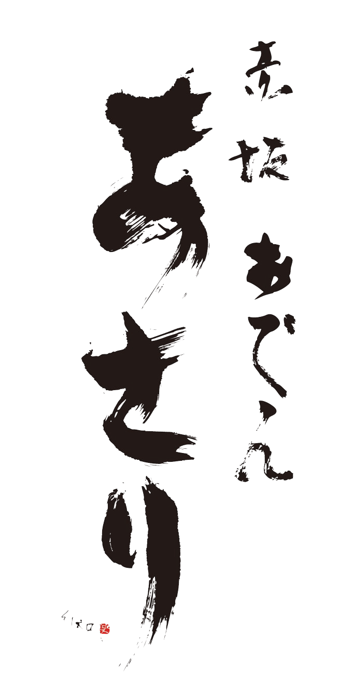

作りたかったのは癒しの空間。
落ち込んだ時も、嬉しい時も、何もない時もまた、
ここが一つの居場所になれたらいいな。
まるで実家の晩御飯のよう。
どこか懐かしいお母さんの味。
第二の実家がここ東京の赤坂にあります。
カウンター 6席
目の前でコトコトと煮込まれるおでんの香りを楽しめる特等席。常連様/お一人様/二名様のご利用が多いです。古木を基調にした内装、よく見てると細部にこだわりを感じるデザインが施されてます。
テーブル 2名様×5
壁側はベンチソファー席でゆったり座れるデザインです。レイアウト自由なので最大人数10名様までご利用可能です。お席やテーブルを広めにデザインしているので、落ち着くゆったり空間をご提供しております。接待/お食事/同期同僚飲みなどにご利用ください。
個室 4名様×1
のれんを下ろすタイプのお部屋。壁側はベンチソファー席で広々座れる人気のお席です。接待/お食事/同期同僚飲みなどにご利用ください。どこか懐かしい心がほっこりする雰囲気のあるモダンクラシック調の和食居酒屋です。
個室 6名様×1
のれんを下ろすタイプのお部屋。壁側はベンチソファー席で広々座れる人気のお席です。接待/お食事/同期同僚飲みなどにご利用ください。どこか懐かしい心がほっこりする雰囲気のあるモダンクラシック調の和食居酒屋です。